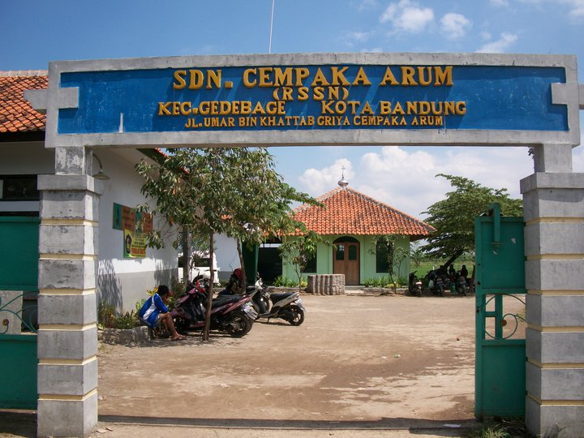
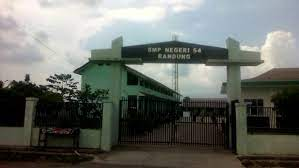
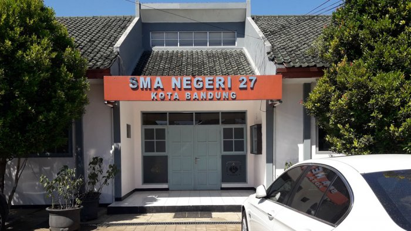

Sekolah Dasar

Saat Umur saya 6 Tahun tepatnya pada tahun 2011 saya memulai perjalanan pendidikan saya di Sekolah Dasar Bakti Nusantara 666, disana saya banyak mempelajari ilmu agama dan juga belajar membaca dengan mengikuti les membaca. Saya
bersekolah di Sekolah Dasar Bakti Nusantara 666 hanya 3 tahun,tepatnya pada kelas 3 semester 2 saya pindah ke Sekolah Dasar Negeri Cempaka Arum. Saya bersekolah di SD Cempaka Arum sampai lulus,dan saya lulus dengan nilai rata
rata UN 7,5.
Sekolah Menengah Pertama

Saya melanjutkan pendidikan di SMP Negeri 54 Bandung pada tahun 2017 lebih tepatnya saat saya berusia 12 Tahun, disini saya susah mulai aktif ekstrakurikuler pramuka.Saya sempat mengikuti kegiatan Gladian Pemimpin Regu
(DIANPINRU) dan juga mewakili sekolah untuk mengikuti Jambore Nasional.Pada saat mendekati ujian nasional dengan rasa tidak menyangka pandemi "Virus Covid-19" menyebar dimana-mana, hal ini menyebabkan saya lulus dengan tidak
mengikuti USBN atau UNBK pada saat itu.
Sekolah Menengah Atas

Dengan pandemi yang masih berlangsung, saya melanjutkan pendidikan di SMA Negeri 27 Bandung pada tahun 2020. Dengan sistem pembelajaran yang dilakukan secara daring, saya kurang memahami materi yang diberikan oleh guru sehingga
saya tidak fokus untuk belajar pada saat itu. Pembelajaran tatap muka diberlakukan pada tahun 2022 dengan mematuhi protokol kesehatan. Selang beberapa bulan, pengumuman siswa elligible di umumkan dan saya masuk sebagai siswa
elligible, namun saya tidak memanfaatkan status tersebut dengan baik yang akhirnya saya ditolak pada PTN yang saya pilih. Kemudian saya mengikuti UTBK dengan pilihan pertama saya Universitas Padjajaran dengan prodi Statistika
dan juga pilihan kedua saya UIN Sunan Gunung Djati dengan prodi Terknik Informatika.Setelah menunggu pengumuman,alhamdulillah saya diterima di pilihan kedua saya yaitu UIN Sunan Gunung Djati dengan prodi Teknik Informatika.